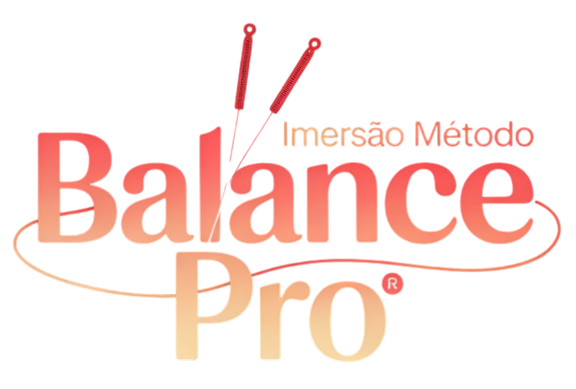

Descubra como aliviar a dor dos seus pacientes em menos de 60 segundos, ao vivo e gratuito
Gratuito · 100% online · Só para profissionais da saúde
A imersão que vai mudar a forma como você trata dor, para sempre
Se você é fisioterapeuta ou acupunturista e ainda sente que falta um protocolo clínico claro e replicável, a Imersão Método Balance Pro foi criada para você. Em 3 encontros ao vivo e gratuitos, o Dr. Fabrício Costa vai te mostrar exatamente o que ele aplica no consultório há mais de 20 anos.
Não é teoria. Não é conteúdo genérico que você já viu em outro curso. É o protocolo real, com casos clínicos, demonstrações ao vivo e o raciocínio por trás de cada passo. Você sai da imersão pronto para aplicar na próxima sessão.
As vagas são limitadas e as inscrições podem encerrar a qualquer momento. Se você chegou até aqui, não deixe para depois.
- 3 aulas ao vivo, 100% gratuitas
- Demonstrações com pacientes reais ao vivo
- Tire dúvidas direto com o Dr. Fabrício
- Primeira aula: 16 de junho. Garante logo
Vídeo do Dr. Fabrício
Substituir pelo link do vídeo
Saia da imersão aplicando
no consultório na semana seguinte
Cada aula foi desenhada para te dar clareza clínica imediata. Sem enrolação, sem teoria desnecessária. Só o que funciona e você consegue replicar.
Diagnóstico em 3 minutos
Pare de adivinhar. Você vai sair com um protocolo claro, rápido e replicável que funciona antes mesmo de o paciente se deitar.
Alívio em 60 segundos
Os pontos certos geram alívio perceptível já no primeiro estímulo. O paciente sente na hora. Você fideliza na primeira sessão.
- Princípios e fundamentos do Método Balance Pro
- Os 6 Sistemas de Meridianos na prática clínica
- Os 3 Passos: Acupuntura 1, 2 e 3
- Localização precisa dos pontos específicos
- Protocolos para disfunções físicas e psicoemocionais
- Instrumentos não invasivos para estimulação de pontos
- Raciocínio clínico baseado em meridianos energéticos
- Aplicação prática guiada ao vivo com o Dr. Fabrício
Quem já aplica o método
não precisa convencer ninguém.
Mensagens espontâneas de fisioterapeutas e acupunturistas que participaram das turmas anteriores do Dr. Fabrício.


.jpeg)
.jpeg)

.jpeg)

Dr. Fabrício Costa
Fisioterapeuta com residência em Ortopedia e Traumatologia, o Dr. Fabrício passou anos buscando um método confiável, sem improvisar a cada sessão.
Depois de se aprofundar no Balance Method do Dr. Richard Tan e de mais de 20 anos de prática clínica real, desenvolveu o Método Balance Pro e hoje ensina o mesmo protocolo que usa no próprio consultório.
- Fisioterapeuta, Universidade Paulista (2002)
- Residência em Ortopedia e Traumatologia, USP (2003)
- Especialista em Acupuntura Sistêmica (2004)
- Diretor do IBRATO desde 2009
- +10 turmas formadas
As vagas estão acabando. Garanta a sua agora.
Centenas de profissionais já se inscreveram. Preencha o formulário agora e receba o link de acesso direto no seu WhatsApp antes que as vagas se esgotem.
- 3 aulas ao vivo, protocolo real, não teoria
- Aplique no consultório já na semana seguinte
- Link enviado direto no seu WhatsApp
- 100% gratuito, sem cartão, sem pegadinha
Garantir minha vaga
3 aulas · primeira em 16 de junho · vagas limitadas
Perguntas frequentes
Sim, 100% gratuito. As 3 aulas ao vivo não têm nenhum custo. O Dr. Fabrício acredita que profissionais que vivenciam o método ao vivo entendem o valor do que estão vendo, e isso fala por si. Sem truque, sem taxa escondida.
Vale, especialmente se você já tem base clínica. O Método Balance Pro não substitui o que você faz, ele complementa. Profissionais experientes costumam ser os que mais se surpreendem com a velocidade dos resultados nas primeiras sessões após a imersão.
A imersão foi desenhada para ser prática desde a primeira aula. O Dr. Fabrício demonstra ao vivo com pacientes reais, mostra o raciocínio clínico passo a passo e tira dúvidas na hora. A maioria dos participantes já aplica algum elemento do método na semana seguinte.
Sim. Mesmo participando de uma ou duas aulas você já sai com conteúdo aplicável. Mas o ideal é garantir a vaga agora e bloquear os dias 16, 23 e 25 de junho na agenda. As vagas são limitadas e não reabrimos inscrições após o encerramento.
Porque as aulas são ao vivo e o Dr. Fabrício interage diretamente com os participantes, tira dúvidas e faz demonstrações em tempo real. Para manter essa qualidade, o número de inscritos é controlado. Quando as vagas acabam, acabam.
Diagnóstico em 3 minutos.
Alívio em 60 segundos.
Primeira aula: 16 de junho.
Inscrição gratuita. Vagas limitadas. Centenas de profissionais já garantiram a vaga. Não deixe para depois e perca a sua.
Garantir minha vaga agoraVagas se esgotando